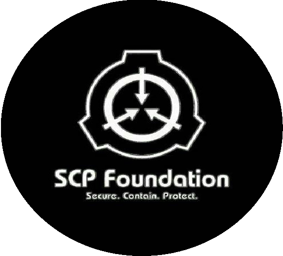

Foundation
he SCP Foundation is a fictional organization documented by the web-based collaborative-fiction project of the same name. Within the website’s fictional setting, the SCP Foundation is responsible for locating and containing individuals, entities, locations, and objects that violate natural law (referred to as SCPs). The real-world website is community-based and includes elements of many genres such ashorror, science fiction, and urban fantasy.